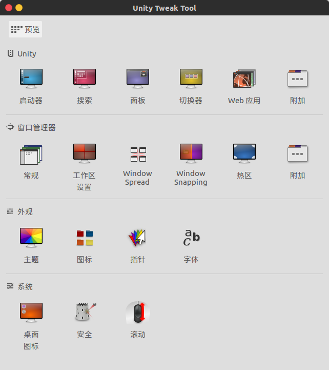
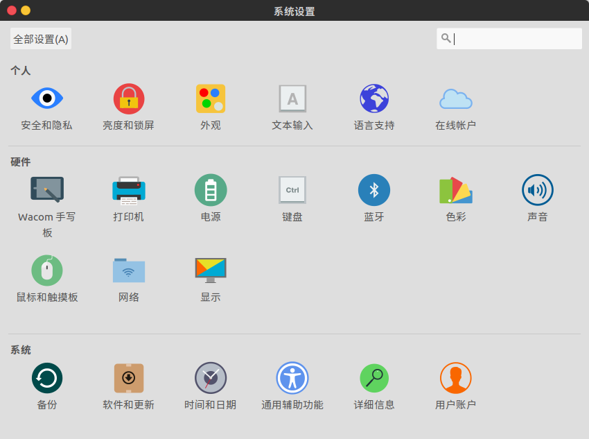
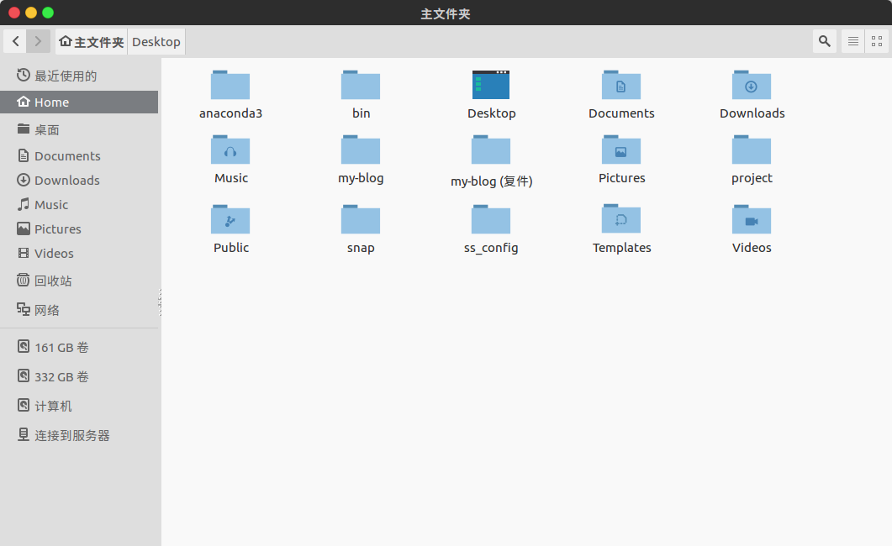
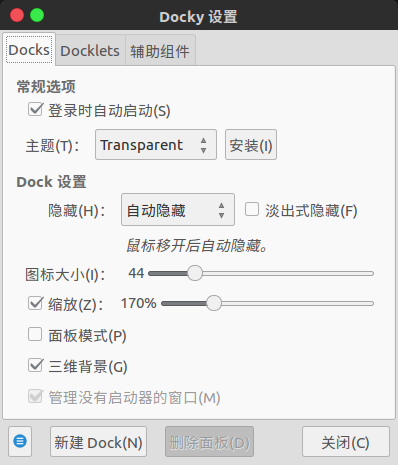
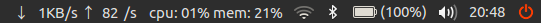
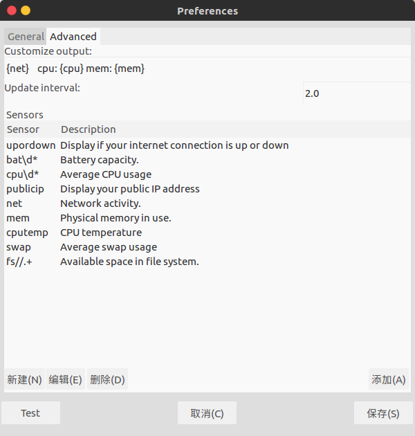
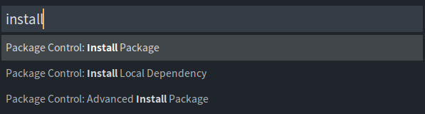
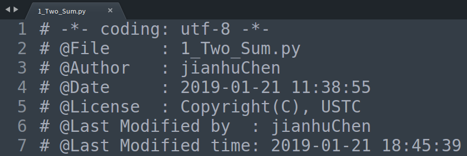
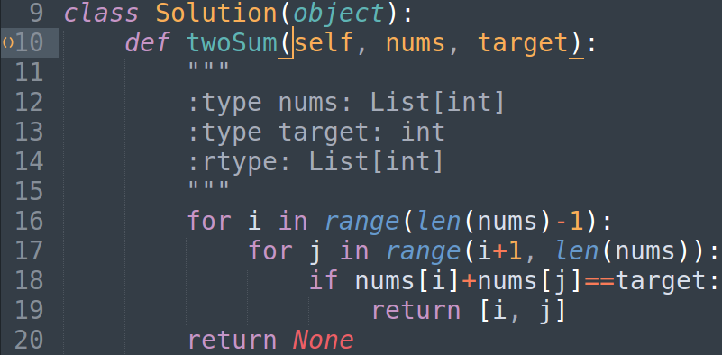

第一部分：ubuntu的美化
第二部分：一些linux上常用的软件、小工具的安装和配置过程
（文章内容中的引用都已注明出处，写本文的主要目的是方便自己重装系统后看看）
外观美化
装完Ubuntu之后的第一件事情就是美化啦，不然怎么用？
这部分只列出了我自己比较喜欢的主题和图标，如果有其他需求可以自行搜索
安装unity-tweak-tool
安装主题、图标等美化素材之前，需要先安装unity-tweak-tool工具
安装命令
1
sudo apt-get install unity-tweak-tool
主题
主题一：flatabulous-theme
久负盛名的扁平化主题
安装命令：
1
2
3sudo add-apt-repository ppa:noobslab/themes
sudo apt-get update
sudo apt-get install flatabulous-theme
图标
图标一：ultra-flat-icons
安装命令
1
2
3sudo add-apt-repository ppa:noobslab/icons
sudo apt-get update
sudo apt-get install ultra-flat-icons
接下来通过unity-tweak-tool这个工具来设置我们刚才安装好的主体和图标
按下super键，搜索unity-tweak-tool，打开后即可设置

以上主题和图标应用后的效果图如下：


Dock工具栏
此部分推荐一个我觉得很好用的Dock工具栏，名字为：Docky
- 安装命令
1 | sudo apt install docky |
配置
按下
super键，搜索Docky，打开后即可配置，以下是我的配置：

参考资料：
常用软件、工具
indicator-sysmonitor-顶栏实时显示网速等系统信息
有时感觉网络失去响应，就通过Ubuntu自带的系统监视器程序来查看当前网速，但是这样很不方便，于是打算让网速显示在顶栏，这样就随时直观的看到。
插件名称：indicator-sysmonitor
安装命令
1
2
3sudo add-apt-repository ppa:fossfreedom/indicator-sysmonitor
sudo apt-get update
sudo apt-get install indicator-sysmonitor启动软件
1
indicator-sysmonitor &
再按
Ctrl+c就可以实现后台运行indicator-sysmonitor，下图为效果图：

设置开机自启动
为了方便还要为程序添加开机启动！鼠标右键点击标题栏上图标，弹出菜单，选择
首选项（preferences），然后将Run on startup的框框勾上自定义显示信息内容和格式
同样，鼠标右键点击标题栏上图标，弹出菜单，选择
首选项（preferences），切换到高级（Advanced）选项卡，就可以对要显示的信息的内容和格式进行设置，如下图所示：
参考资料：
WPS for Linux
ubuntu下想看看word文档或者ppt最方便的方式还是使用WPS for Linux，装虚拟机太麻烦！
安装
进入官网：http://www.wps.cn/product/wpslinux，点击立即下载即可下载安装包，双击安装即可
解决”系统缺失字体”问题
启动WPS for Linux后，出现提示”系统缺失字体” ，出现提示的原因是因为WPS for Linux没有自带windows的字体，只要在Linux系统中加载字体即可。
具体操作步骤如下：
下载缺失的字体文件，然后复制到Linux系统中的
/usr/share/fonts文件夹中，点击下载。下载完成后，解压并进入目录中，继续执行：
1
sudo cp * /usr/share/fonts
执行以下命令,生成字体的索引信息：
1
2sudo mkfontscale
sudo mkfontdir运行
fc-cache命令更新字体缓存。1
sudo fc-cache
重启wps即可，字体缺失的提示不再出现。
参考资料：
zsh终端
安装命令
1
sudo apt-get install -y zsh
美化
刚安装好的
zsh可以通过在terminal里输入命令zsh来启动，启动后会发现默认情况下没有关键字高亮显示，所以我们需要对其进行美化安装oh-my-zsh：
oh-my-zsh中整理了常用的zsh扩展和主题，所以先安装oh-my-zsh
使用
curl安装 :1
sh -c "$(curl -fsSL https://raw.github.com/robbyrussell/oh-my-zsh/master/tools/install.sh)"
使用
wget安装 :1
sh -c "$(wget https://raw.github.com/robbyrussell/oh-my-zsh/master/tools/install.sh -O -)"
安装主题：
如果需要安装其他主题可以参考下方给出的参考资料
将zsh设置为系统默认终端
执行如下命令：
1
chsh -s `which zsh`
然后重新登录系统即可生效
参考资料：
MPV播放器
MPV 是一个开源的，跨平台视频播放器，带有极简的 GUI 界面以及丰富的命令行控制。
安装命令
1
sudo apt install mpv
使用技巧
快捷键
[：减慢播放速度快捷键
]：加快播放速度
Sublime Text 3 相关
程序员必备，有木有！！
安装
安装命令
Install the GPG key:
1
wget -qO - https://download.sublimetext.com/sublimehq-pub.gpg | sudo apt-key add -
Ensure apt is set up to work with https sources:
1
sudo apt-get install apt-transport-https
Select the channel to use:
Stable
1
echo "deb https://download.sublimetext.com/ apt/stable/" | sudo tee /etc/apt/sources.list.d/sublime-text.list
Dev
1
echo "deb https://download.sublimetext.com/ apt/dev/" | sudo tee /etc/apt/sources.list.d/sublime-text.list `Update apt sources and install Sublime Text
1
2sudo apt-get update
sudo apt-get install sublime-text
插件的安装方法
要想在sublime text 3中安装插件，我们首先需要安装一下包管理器（packages control），在编辑器中使用快捷键 Ctrl+` 打开控制台，并输入如下代码，然后回车：
1 | import urllib.request,os,hashlib; h = 'df21e130d211cfc94d9b0905775a7c0f' + '1e3d39e33b79698005270310898eea76'; pf = 'Package Control.sublime-package'; ipp = sublime.installed_packages_path(); urllib.request.install_opener( urllib.request.build_opener( urllib.request.ProxyHandler()) ); by = urllib.request.urlopen( 'http://packagecontrol.io/' + pf.replace(' ', '%20')).read(); dh = hashlib.sha256(by).hexdigest(); print('Error validating download (got %s instead of %s), please try manual install' % (dh, h)) if dh != h else open(os.path.join( ipp, pf), 'wb' ).write(by) |
完成上述安装之后，查看菜单栏Preferences下出现Package Control选项则表明安装成功。
接下来，我们就可以使用Package Control来完成我们的插件安装了，具体操作如下：
使用快捷键 Ctrl+Shift+P 打开Package Control
在打开的窗口中输入install 并选择Install Package选项，然后回车

稍等片刻，就可以在弹出的搜索框内搜索你需要的插件了
推荐插件
ChineseLocalization
该插件提供了用于汉化编辑器的功能，安装完该插件以后，我们的编辑器就可以实现汉化
File Header
自动添加文件头信息，效果如下：

上图的效果需要在安装好插件后做相应的配置，过程如下：
打开python语言配置文件文件
～/.config/sublime-text-3/Packages/FileHeader/template/header/Python.tmpl，写入以下内容（根据自己情况修改）：1
2
3
4
5
6
7参考资料：
BracketHighlighter
类似于代码匹配，可以匹配括号，引号等符号内的范围，效果图如下：

使用方法：系统默认为白色高亮，可以使用链接所述方法进行自定义配置
http://www.360doc.com/content/14/1111/15/15077656_424301780.shtml
参考资料：
Sublime Text 3 不能输入汉字问题的解决方法
- 下载我们需要的文件，打开终端，输入：
1 | git clone https://github.com/lyfeyaj/sublime-text-imfix.git |
将
subl移动到/usr/bin/，并且将sublime-imfix.so移动到/opt/sublime_text/（sublime的安装目录），终端输入：1
2
3cd ~/sublime-text-imfix
sudo cp ./lib/libsublime-imfix.so /opt/sublime_text/
sudo cp ./src/subl /usr/bin/用
subl命令试试能不能启动sublime，如果成功启动的话，应该就可以输入中文了。
参考资料：
FTP客户端 Filezilla
安装
1 | sudo apt-get install filezilla |